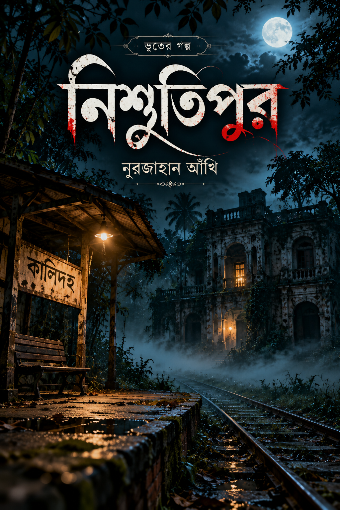

BENGALI HORROR NOVEL
নিশুতিপুর
শেষ ট্রেনের যাত্রী, কালিদহ স্টেশনের নিস্তব্ধতা, এক রহস্যময় জনপদ আর অন্ধকারে লুকিয়ে থাকা অজানা সত্য— নিশুতিপুরের পথে শুরু হোক এক শিহরণজাগানো যাত্রা।
নিশুতিপুর পড়ুন →প্রচ্ছদে চাপ দিলেও উপন্যাসের পেজ খুলবে।